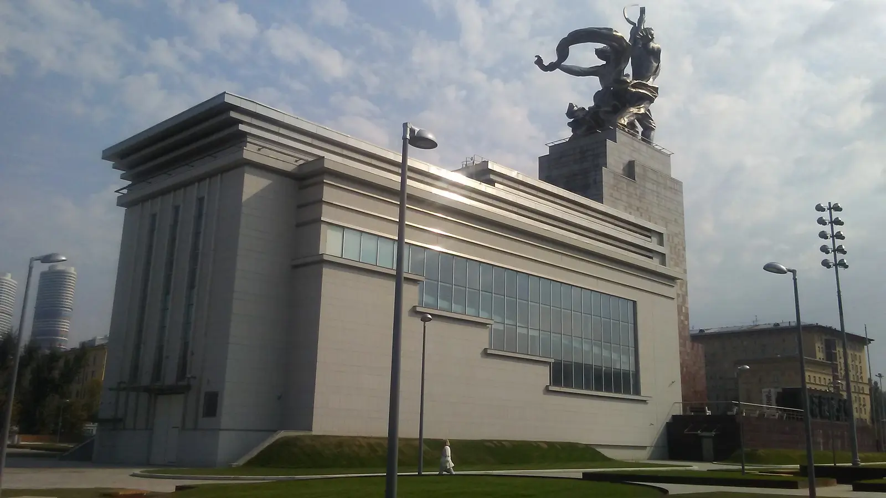

Scegli una data: evento, decisione istituzionale e limite dell’inferenza resteranno distinti.
01 · Prima di sapere
Questi corpi avanzano
o comandano?
Niente autore, titolo, nazione o regime. Prima vengono postura, gesto, materia, scala e il punto dal quale sei costretto a guardare.
Sto osservando una scultura, un simbolo politico o una promessa trasformata in corpo?

Scegli un marcatore
Descrivi prima di interpretare. Un gesto diretto verso l’alto non dimostra, da solo, libertà, entusiasmo o obbedienza.
02 · La soglia da Dada e Surrealismo
La stessa operazione
non ha la stessa politica.
Montaggio, sorpresa, ripetizione, fotografia e allestimento possono incrinare un’autorità oppure servirla. Non esiste una genealogia automatica “avanguardia → propaganda → totalitarismo”.
A?VOLTOFOLLA
Limite: forma e tecnica non bastano a classificare un’immagine. Servono committente, istituzione, distribuzione, pubblico costruito e rapporto con la coercizione.
03 · Che cosa significa totalitario?
Confrontare non significa
dichiarare identici.
“Totalitarismo” è una categoria storiografica discussa. Aiuta a interrogare partito unico, mobilitazione, apparati e ambizione di trasformare la società; diventa fuorviante se cancella differenze fra fascismo, nazismo e stalinismo.
Classificatore politico
Rete non deterministica
Una condizione apre possibilità; una decisione le trasforma in istituzioni e conseguenze. Nessun nodo rende inevitabile il regime.
04 · L’apparato del visibile
Un’immagine non agisce
mai da sola.
Produzione, censura, riproduzione, luogo, rituale e violenza cambiano ciò che un’immagine può fare. Il pubblico non è una massa vuota: convinzione, paura, vantaggio, adattamento e dissenso possono coesistere.
Seleziona un nodo per leggerne la funzione.
Simulazione astratta originale: mostra il mutamento di contesto, non insegna a produrre propaganda.
05 · Italia fascista
Molti stili.
Un campo politico.
Il fascismo non impose subito un unico stile: Futurismo, Novecento Italiano, Razionalismo, monumentalismo, classicismo e ruralismo competirono per committenze e visibilità. Questa pluralità non rende neutro il sistema che li organizzava.
Margherita Sarfatti costruì reti critiche e istituzionali intorno al Novecento Italiano; Sironi lavorò fra pittura, grafica e grandi cicli; Terragni cercò un razionalismo moderno; Piacentini mediò classicismo, monumentalità e apparato statale. Non sono equivalenti, ma tutti vanno letti dentro committenze e istituzioni.
Documento collegato, non copiato
La Mostra della Rivoluzione Fascista del 1932 trasformò il racconto politico in percorso immersivo. L’Archivio Luce conserva cinegiornali e fotografie con didascalie coeve da trattare come fonti del regime, non come descrizioni neutrali.
Archivio Storico Luce ↗Scegli un linguaggio per confrontare forma, committenza, pubblico, modernità e responsabilità.
La pluralità termina nell’esclusione?
No: pluralità stilistica e chiusura politica possono coesistere. Colonialismo, guerra d’Etiopia, proclamazione dell’impero e leggi razziali del 1938 trasformano persone reali in gerarchie giuridiche e visive. La continuità professionale degli artisti va giudicata senza confondere adesione, opportunismo, compromesso, dissenso e persecuzione.
06 · Germania nazista
Esporre significa anche
confiscare ed escludere.
La Gleichschaltung coordinò istituzioni e professioni; la Reichskulturkammer rese l’accesso al lavoro culturale dipendente dall’appartenenza. Nel 1937 due mostre vicine produssero funzioni opposte: consacrare un canone e umiliare il nemico.
Il Bauhaus si sciolse nel 1933 dopo perquisizione e pressioni naziste. La confisca del 1937 fu seguita da vendita all’estero, dispersione e distruzione; l’esclusione professionale degli artisti ebrei e politicamente indesiderati appartiene alla stessa politica razziale che tradusse il corpo “tedesco” in norma e la differenza in persecuzione. Radio, fotografia, illuminazione e cinema mostrano che il nazismo non fu tecnicamente antimoderno.
Limite: il laboratorio spiega il potere dell’allestimento; non ricostruisce fedelmente nessuna sala e non autorizza a confondere i due eventi del 1937.
07 · Unione Sovietica
Dalla rivoluzione alla norma:
non un blocco unico.
Avanguardia rivoluzionaria, Costruttivismo e fotomontaggio non sono sinonimi di stalinismo. La centralizzazione del 1932 e la codificazione del Realismo socialista nel 1934 modificano istituzioni, temi e possibilità senza cancellare in un istante ogni conflitto.
Attraversa le trasformazioni
Inizia dalla pluralità: una successione cronologica non è una catena necessaria.
Una fotografia può cambiare senza “essere falsa” nello stesso modo
ABCD
Scegli un’operazione. Lo schema non imita un documento storico e non sostituisce il confronto archivistico fra versioni.
El Lissitzky, Aleksandr Rodčenko e altri costruttivisti sperimentarono tipografia, fotografia, fotomontaggio e produzione; i loro rapporti con istituzioni rivoluzionarie furono concreti ma non rendono il Costruttivismo sinonimo della norma staliniana successiva. Le epurazioni colpirono persone, archivi e racconto del passato: una fotografia alterata va provata confrontando versioni e provenienze, non riconosciuta “a intuito”.
08 · La città e la mostra diventano scena
Lo spazio organizza
corpi e fotografie.
Padiglioni, assi, piazze, tribune e monumenti agiscono sull’esperienza fisica; le fotografie successive selezionano punti di vista e trasformano l’architettura in immagine politica.
Parigi 1937 · documento collegato
Apri la fotografia storica ↗I padiglioni tedesco e sovietico si fronteggiavano lungo l’asse del Trocadéro. La fotografia storica completa è decisiva, ma non viene copiata localmente per l’incertezza residua sulla durata statunitense del file anonimo pubblicato nel 1937.
Il padiglione di Albert Speer e quello sovietico di Boris Iofan con il gruppo di Muchina costruivano un confronto frontale fra massa, altezza, emblema e movimento. Il caso non rende identici i regimi: permette di distinguere progetto dell’edificio, esperienza del visitatore, uso cerimoniale e fotografia che ne fissa un solo punto di vista.
09 · Cinema, fotografia e montaggio della folla
L’unità della folla
è anche un effetto di regia.
Campo lungo, primo piano, angolazione, durata, ritmo e alternanza capo/folla costruiscono simultaneità ed entusiasmo. Non dimostrano che ogni presente aderisse spontaneamente.
Riefenstahl: analisi senza copia
Triumph des Willens va studiato insieme come costruzione formale e funzione politica. I fotogrammi non sono copiati: il laboratorio isola operazioni di montaggio senza imitare sequenze o musiche protette.
Deutsches Historisches Museum ↗10 · Costruire il corpo normale
Idealizzare qualcuno significa spesso
rendere altri corpi impossibili.
Forza, salute, maternità, lavoro, giovinezza, virilità e purezza non descrivono soltanto: diventano norme quando istituzioni, leggi e pratiche decidono chi appartiene.
Descrizione, norma, esclusione, conseguenza
Fascismo italiano
Virilità, maternità, sport, ruralismo e impero si intrecciano con colonialismo e, dal 1938, razzismo di Stato.
Nazismo
La comunità razziale definisce salute e appartenenza, lega estetica, eugenetica, antisemitismo, persecuzione e sterminio.
Stalinismo
Corpo produttivo, giovinezza e lavoro promettono un futuro collettivo mentre carestie, deportazioni ed epurazioni restano fuori campo.
Limite: nessuna immagine di vittime viene usata come contrasto spettacolare ai corpi idealizzati.
11 · Che cosa può fare un artista?
Fra eroe e servo
esiste la storia.
Adesione, carriera, compromesso, esilio, esclusione, clandestinità e resistenza non sono caselle equivalenti. Il giudizio richiede documenti, alternative realistiche, rischi, vantaggi e conseguenze.
adesionemilitanzacommittenzacarrieraopportunismocompromessonegoziazionedoppiezzasilenzioemigrazioneesilioesclusionepersecuzioneclandestinitàresistenzatestimonianza
Scegli un caso. La scheda separa documentazione, alternative, rischi, vantaggi, conseguenze e incertezze.
Regola: il valore estetico non assolve; il contesto coercitivo non rende automaticamente identiche tutte le scelte.
12 · Quando l’immagine diventa prova
Una fotografia può documentare
e continuare a ferire.
Propaganda, fotografia del persecutore, immagine clandestina, documento amministrativo, testimonianza e documentazione della liberazione chiedono domande differenti. La provenienza non garantisce neutralità.
Censura, saccheggio e distruzione delle opere precedono e accompagnano esclusione, persecuzione, deportazione, guerra e sterminio. Dopo la liberazione, fotografie, registri, oggetti e testimonianze entrano in usi probatori e memoriali differenti: nessuna fonte esaurisce l’evento e nessuna immagine è eticamente neutra soltanto perché autentica.
Classifica la funzione della fonte
Dopo che le immagini sono state usate per costruire il nemico, nascondere la violenza e documentare l’annientamento, è ancora possibile rappresentare la catastrofe senza trasformarla in spettacolo?
13 · Secondo sguardo
La forza era nelle figure
o nell’apparato?
L’opera unisce lavoratore e contadina collettiva, trasforma falce e martello in un asse proiettato in avanti e salda scultura, padiglione, fotografia e identità statale. Il movimento è reale come forma; la promessa politica non è dimostrata dal gesto.
- Funzione 1937
- Emblema monumentale commissionato per il padiglione sovietico.
- Contesto
- Esposizione internazionale e confronto spaziale con il padiglione tedesco.
- Storia materiale
- Smontata, trasferita a Mosca, restaurata e ricollocata su un nuovo padiglione.
- Collocazione e inventario
- VDNKh, Mosca; nessun numero d’inventario museale verificabile per questo monumento.
- File e provenienza
- Fotografia 2018 di Pulux11 da Wikimedia Commons, CC BY-SA 4.0; 1600 × 900 WebP, nessun ritaglio.
La tua prima nota
Non hai ancora scritto una prima nota.
Atlante conclusivo
Sintesi delle azioni registrate
Nessuna attività ancora registrata.
La sintesi descrive soltanto attività compiute e note scritte. Non deduce emozioni, convinzioni o apprendimento non verificato.
Soglia verso la Galleria V
21 · Dopo l’irrappresentabile
Dopo che il potere ha trasformato corpi, città e immagini in strumenti di dominio e distruzione, l’arte deve rappresentare la catastrofe, conservarne le tracce o riconoscere ciò che non riesce più a mostrare?Vai alla scheda del modulo 21
Il modulo successivo non è stato costruito.
Verifica finale
Sedici nuclei.
Tutti irrinunciabili.
Nessuna media: il percorso si completa soltanto a 16/16. Ogni errore apre una microlezione e una domanda di recupero realmente diversa.
0 / 16 nuclei
Tutti i nuclei sono compresi.
Hai distinto forma, apparato, differenze storiche, responsabilità e statuto delle immagini-documento.
Fonti
Opere, archivi, licenze, limiti.
Il registro separa oggetto storico, riproduzione digitale, didascalia coeva, ricostruzione storiografica e interpretazione.
Apri il registro completo delle fonti
Quattro file con licenza CC e una riproduzione in pubblico dominio. Opere protette e fotografie giuridicamente incerte restano collegate, non copiate.